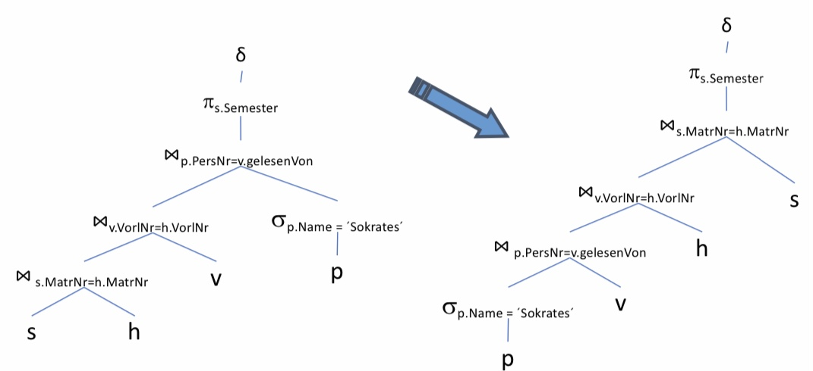
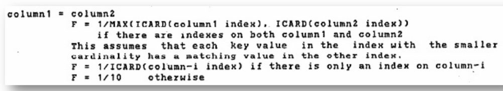

Bearbeitung
Contents
12. Bearbeitung#
Anfragebearbeitung – Grundproblem
Die Anfragen, die an eine Datenbank gestellt werden, sind deklarativ. Solche Anfragen können in SQL, aber auch in der Relationalen Algebra formuliert werden.
Mittels der Anfragen sagt man somit was man will, aber nicht wie man das bekommt, was man will.
Das Datenbanksystem findet von selbst heraus, wie es an das kommt, was man möchte.
Angenommen die Anfragen wären nicht deklarativ, dann müsste ein Programm geschrieben werden, das beispielsweise erst eine CSV-Datei durchgeht usw.
Stattdessen “sagt” man (deklarativ): Gebe alle Filme aus, die im Jahr 1996 produziert werden.
Die Anfragen müssen in eine ausführbare (prozedurale) Form transformiert werden. Ein Ziel hierbei ist es, einen „QEP“ (prozeduraler Query Execution Plan) zu erhalten. Wichtig zu beachten ist die Effizienz des Programms. Es soll zum Einem schnell sein, aber zum Anderen auch wenige Ressourcen verbrauchen (CPU, I/O, RAM, Bandbreite), denn es wirkt sich stark auf den Energieverbrauch aus.
Ablauf der Anfragebearbeitung
Gegeben ist zunächst eine Anfrage der Form:
SELECT * FROM x WHERE …;
Parsing:
Eine solche Anfrage wird zunächst mit Blick auf die Syntax geparst. Anschließend werden die Elemente auf korrekte Semantik überprüft und ein Parsebaum erstellt. Es wird herausgefunden auf welche Operationselemente die Anfrage abgebildet wird.
Wahl des logischen Anfrageplans:
Im zweitem Schritt wird ein logischer Anfrageplan ausgewählt. In der Regel ist es ein Baum mit logischen Operatoren.
Es gibt exponentiell viele Pläne, die man anhand der Elemente, die man in der Anfrage hat, erstellen kann. Natürlich lassen sich bestimme Kombinationen nicht darstellen. Das Grundproblem ist auch NP-Vollständig.
Unter den verschiedenen Plänen muss der optimale Plan ausgewählt werden. Dabei gibt es verschiedene Optimierungsverfahren, die angewandt werden können.
Mittels der logischen Optimierung können Operatoren im Plan hin- und hergeschoben werden. Weitere Optimierungen können auch mit regelbasierten und kostenbasierten Optimierern durchgeführt werden. Diese basieren auf den Kosten der jeweiligen Operationen der Anfragen.
Wahl des physischen Anfrageplans:
Für jede Operation, die momentan noch in deklarativer Form ist, muss nun eine Prozedur bzw. ein Programm mit physischen Operatoren ausgewählt werden. Dies sind unter anderem Algorithmen, Scan Operatoren oder auch JOIN-Implementierungen.
Hierbei können physische Optimierungen angewandt werden.
Am Ende wird der ausgewählte Anfrageplan ausgeführt.

12.1. Parsen der Anfrage#
Der erste Schritt im Ablauf einer Anfragebearbeitung ist das Parsen der Anfrage. Dazu wird zunächst eine Syntaxanalyse durchgeführt.
12.1.1. Syntaxanalyse#
Die Aufgabe einer Syntaxanalyse ist die Umwandlung einer SQL Anfrage in einen Parsebaum.
In einem Parsebaum werden folgende Elemente als Atome (Blätter) dargestellt:
Schlüsselworte
Konstanten
Namen (Relationen und Attribute)
Syntaxzeichen
Operatoren
Bei Syntaktischen Kategorien können Teilausdrücke einer Anfrage Namen gegeben werden. Die Teilausdrücke können also zu Kategorien zusammengefasst werden, beispielsweise bei einer VIEW.
12.1.2. Eine Grammatik für einen Teil von SQL#
Die Anfragen unterliegen einer Grammatik (wie man sie aus der theoretischen Informatik kennt). Sie bestehen aus einer Struktur der Form “SELECT FROM WHERE”, kurz SFW. Es können keine Anfragen formuliert werden, die nicht der Grammatik entsprechen.
Anfragen:
- <Anfrage> :: = <SFW> - <Anfrage> :: = (<SFW>) - Mengenoperatoren fehlen
SFWs:
Die SFWs werden wie folgt aufgebaut, es fehlen Gruppierungen, Sortierungen etc.:- <SFW> ::= SELECT <SelListe> FROM <FromListe> WHERE <Bedingung>
Listen:
Dabei ergibt sich eine SelListe(SelectListe) aus einem Attribut und einer anderen SelListe bzw. nur aus einem Attribut.- <SelListe> ::= <Attribut>, <SelListe> - <SelListe> ::= <Attribut>
Die FromListe ergibt sich aus einer Relation oder aus einer Relation mit einer weiteren FromListe.
- <FromListe> ::= <Relation>, <FromListe> - <FromListe> ::= <Relation>
Bedingungen (Beispiele):
Bedingungen können Verknüpfungen bzw. Kombinationen von anderen Bedingungen sein. Verknüpft werden können sie beispielsweise mit AND oder auch mit OR:- <Bedingung> ::= <Bedingung> AND <Bedingung>
Eine Bedingung kann auch eine Anfrage sein, bei der eine Überprüfung in einer anderen Anfrage angefordert wird:
- <Bedingung> ::= <Tupel> IN <Anfrage> - <Bedingung> ::= <Attribut> = <Attribut> - <Bedingung> ::= <Attribut> LIKE <Muster>
Tupel, Attribute, Relationen und Muster:
Die Inhalte von Tupeln, Attributen, Relationen und Mustern sind nicht durch grammatische Regeln definiert. Entweder sie existieren oder sie existieren nicht.
Angenommen man wählt eine Relation aus, die nicht existiert. Die Anfrage kann nicht korrekt ausgeführt werden und die Datenbank gibt zurück, dass es diese Relation nicht gibt.
Die vollständige Grammatik kann man z.B. unter http://docs.openlinksw.com/virtuoso/GRAMMAR.html finden.
12.1.3. Parse-Baum#

In diesem Bild ist der Aufbau eines Parsebaums dargestellt, der anhand der vorherigen SQL-Anfrage erstellt wurde. Dabei besteht die Anfrage aus einem SFW. Das SFW kann wiederrum unterteilt werden in SELECT, SelListe, …
Alle Konstanten und Relationen lassen sich in den Blattstrukturen wiederfinden.
12.1.4. Prüfung der Semantik#
Die Prüfung der Semantik auf Korrektheit erfolgt während der Übersetzung. Dabei werden auf verschiedene Punkte geachtet, unter Anderem:
Existieren die Relationen und Sichten der FROM Klausel?
Existieren die Attribute in den genannten Relationen?
Sind sie eindeutig?
Sind korrekte Typen für Vergleiche gegeben? (Bsp.: Vergleicht man einen Integer mit einem String)
Aggregation korrekt?
…
12.1.5. Vom Parse-Baum zum Operatorbaum#

Der vorherige Schritt hat einen Parsebaum generiert. Dieser wird jetzt in einen Operatorbaum umgewandelt. Dargestellt werden kann der Operatorbaum mittels Relationaler Algebra. Dabei entspricht das SELECT einer Projektion und das WHERE einer Selektion. Aus den Schlüsselwörtern werden konkrete Operatoren. Es ist nun auch bekannt, dass spielt_in und Schauspieler durch ein Kreuzprodukt kombiniert werden. Diese beiden Relationen sind also der Input des Kreuzprodukts. Auf dem Output des Kreuzproduktes findet dananch eine Selektion statt und auf dessen Output letztendlich eine Projektion.
12.2. Transformationsregeln der RA#
Für jede Anfrage gibt es verschiedene Pläne. Das bedeutet also auch, dass es verschiedene Operatorenbäume gibt. Somit kann man verschiedene Anfragen ineinander transformieren. Dies wird anhand der Transformationseregeln der Relationalen Algebra dargestellt.
12.2.1. Anfragebearbeitung – Transformationsregeln#
Die Transformation der internen Darstellung soll ohne eine Änderung der Semantik erfolgen. Damit ist gemeint, dass die Operatorenbäume nach der Transformation immernoch die gleiche Anfrage wie vor der Transformation beantworten können bzw. es kommt immernoch das gleiche Ergebnis heraus.
Das Ziel einer Transformation ist es eine effizientere Ausführung zu finden. Die Operatoren sollen möglichst kleine Zwischenergebnisse liefern. Der nächste Operator soll als Input möglichst kleine Mengen von Tupeln erhalten, auf denen er arbeiten kann.
Um diese Transformation zu vollführen, müssen zunächst äquivalente Ausdrücke identifiziert werden.
Zwei Ausdrücke der relationalen Algebra gelten als äquivalent, falls sie gleiche Operanden (= Relationen) besitzen und stets die gleiche Antwortrelation zurückgeben.
‘Stets’ bedeutet hierbei, dass nicht per Zufall die gleichen Ergebnisse bei mehreren Anfragen herauskommen. Für jede mögliche Instanz der Datenbank, muss jedes Mal das gleiche Ergebnis entstehen.
12.2.2. Anfragebearbeitung – Beispiel#
In diesem Beispiel soll der Nachname projiziert werden. Dafür wird das Kreuzprodukt zwischen den Relationen ‘Mitarbeiter’ und ‘Projekte’ erstellt. Darauf werden alle Paare, bei denen die Mitarbeiter-ID gleich der Projekt-ID ist, selektiert. Die Projekte, die ein gleiches oder größeres Budget als 40000 haben, werden aussortiert.
Es kann nun überlegt werden, wo man noch früher Tupel herausfiltern kann. Eine Möglichkeit wäre es die Selektion mit dem Kreuzprodukt zu einem Join zu kombinieren. Eine Andere wäre es, die übrig gebliebene Selektion früher durchzuführen. Noch bevor das Kreuzprodukt der beiden Relationen gebildet wird, kann man die Selektion ‘p.Budget < 40000’ auf der ‘projekt’-Relation ausführen. Die Erwartung ist, dass der nachfolgende Join auf einer kleineren Tupelmenge ausgeführt wird.
12.2.3. Kommutativität und Assoziativität#
Die Kommutativität und Assoziativität gelten insbesondere für Mengenoperationen.
\(\cup\) ist kommutativ und assoziativ
R \(\cup\) S = S \(\cup\) R
(R \(\cup\) S) \(\cup\) T = R \(\cup\) (S \(\cup\) T)\(\cap\) ist kommutativ und assoziativ
R \(\cap\) S = S \(\cap\) R
(R \(\cap\) S) \(\cap\) T = R \(\cap\) (S \(\cap\) T)⋈ ist kommutativ und assoziativ
R ⋈ S = S ⋈ R
(R ⋈ S) ⋈ T = R ⋈ (S ⋈ T)
Bei einem Join kann es passieren, dass die Spaltenreihenfolge anders ist. Sie kann nachträglich noch geändert werden (bspw. mit einer Projektion).
Alle diese Regeln gelten jeweils für Mengen und für Multimengen. Zudem können die Ausdrücke in beide Richtungen verwendet werden.
12.2.4. Weitere Regeln#
Selektion
\(\sigma_{c1 AND c2}(R ) = \sigma_{c1}(\sigma_{c2} (R))\)
Wenn es eine Selektion mit zwei Bedingungen ist, kann sie in zwei Selektionen, die aufeinander aufbauen, kaskadiert werden.
\(\sigma_{c1 OR c2}(R ) = \sigma_{c1}(R) \cup \sigma_{c2} (R)\)
Wenn es eine Selektion mit einem OR ist, kann davon die Vereinigung gebildet werden.
Dabei kommt es zu einem Problem bei Multimengen:
c1 or c2 bedeutet, gebe jedes Tupel zurück, egal ob Bedingung c1, c2 oder beide gelten. Man würde bei der Vereinigung eine andere Anzahl an Tupeln bekommen. Bei den Fällen bei denen beide Bedingungen gelten, würde es das Tupel doppelt geben.\(\sigma_{c1}(\sigma_{c2}(R)) = \sigma_{c2}(\sigma_{c1}(R))\)
Die äußere Bedigung kann mit der inneren Bedingung vertauscht werden. Dabei sollte die günstigere Bedingung am besten zuerst ausgeführt werden.
\(\sigma_{c}(R \Phi S) \equiv (\sigma_{c} (R)) \Phi (\sigma_{c} (S))\)
\(\Phi \in \{\cup, \cap , - , ⋈\}\)
\(\sigma_{c}(R \Phi S) \equiv (\sigma_{c} (R)) \Phi S\)
\(\Phi \in \{\cup, \cap , - , ⋈\}\)
Falls sich c nur auf Attribute in R bezieht, kann es so umgeformt werden, sodass sich die Selektion nur auf die Relation R bezieht.
Projektion
\(\pi_{L}(R ⋈ S) = \pi_{L}(\pi_{M}(R) ⋈ \pi_{N}(S))\)
Eine Projektion einer Spalte auf einem Join zweier Relationen kann einer Projektion einer Spalte auf einem Join zweier Projektionen auf jeweils einer Relation entsprechen.\(\pi_{L}(R ⋈_{C} S) = \pi{L}(\pi_{M}(R) ⋈_{C} \pi_{N}(S))\)
Genauso kann nun auch bei einem Join mit Bedingung und einem Kreuzprodukt vorgegangen werden.\(\pi_{L}(R \times S) = \pi_{L}(\pi_{M}(R) \times \pi_{N}(S))\)
\(\pi_{L}(\sigma_{C}(R)) = \pi_{L}(\sigma_{C}(\pi_{M}(R)))\)
Hierbei kann eine Projektion noch vor die Selektion geschoben werden. Wichtig dabei ist, dass die neue Projektion (\(\pi_{M}\)) L enthält. Es können auch weitere Projektionen hinzugefügt werden. Solange sie L enthalten, verändert sich nichts.
12.3. Optimierung#
Weitere Optimierungen haben das Ziel die Anfragen von zuvor noch schneller bearbeiten zu können.
12.3.1. Anfragebearbeitung - Optimierung#
Bei der Anfragebearbearbeitung wird eine regelbasierte Optimierung durchgeführt. Dabei schreibt ein fester Regelsatz Transformationen vor. Die Transformationen sollen eine Anfrage schneller bearbeiten.
Die Prioritäten unter den Regeln werden durch Heuristiken bestimmt. Es ist nach Erfahrung der beste Weg, es muss aber nicht immer der Fall sein. Ein Beispiel einer solchen Optimierung ist das ‘pushen’ einer Selektion nach unten im Anfragebaum.
Außerdem wird noch eine kostenbasierte Optimierung angewandt. Für jede Relation kann ein Kostenmodell aufgestellt werden. Das Kostenmodell basiert dabei auf Statistiken, die das Datenbankmodell gesammelt hat. Nach dem Aufstellen des Kostenmodells kann mit diesem ein optimaler Plan bestimmt werden, bei dem die Kosten minimal sind. Dazu kann auch die optimale Joinreihenfolge bestimmt werden. Transformationen helfen hierbei die Kosten zu verringern.
Im Allgemeinen wird nicht die optimale Auswertungsstrategie gesucht, sondern eine einigermaßen effiziente Variante. Sie soll dabei helfen den schlimmsten Fall zu verhindern -> Avoid the worst case!
12.3.2. Logische Optimierung#
Bei der logischen Optimierung kann anhand der Transformationsregeln jeder Ausdruck im Anfragebaum in viele verschiedene, semantisch äquivalente Ausdrücke umgeschrieben werden. Dabei wird der (hoffentlich) beste Ausdruck (=Plan, =QEP (QueryExecutionPlan)) ausgewählt.
12.3.3. Physische Optimierung#
Für jede relationale Operation gibt es viele verschiedene Implementierungen:
Zum Beispiel für den Zugriff auf Tabellen kann es ein Scan, verschiedene Indizes, ein sortierter Zugriff, etc. sein.
Genauso bei Joins können auch verschiedene Implementierungen wie Nested loop, sort-merge, hash, etc. ausgewählt werden.
Für jede Operation wird wieder die (hoffentlich) beste Implementierung ausgewählt.
Es kann nun sein, dass die logische von der physischen Optimierung abhängt.
Beispielsweise kann es sein, dass ein bestimmter Plan besser funktioniert, wenn man einen Nested-Loop-Join durchführt. Wenn eine Schleife innerhalb einer anderen ist, kann in der einen Schleifen bereits etwas Anderes mitgeprüft werden. Das würde einem bestimmten logischen Plan besser entsprechen.
12.3.4. Logische Optimierung – regelbasiert#
Die Grundsätze der logischen Optimierung lauten wie folgt:
Selektionen sollen so weit wie möglich im Baum nach unten geschoben werden.
Selektionen mit AND können aufgeteilt und separat verschoben werden.
Projektionen sollen so weit wie möglich im Baum nach unten geschoben werden,
bzw. neue Projektionen können eingefügt werden.
Bei dem nach unten Verschieben von Selektionen und Projektionen gibt es einen Unterschied:
Bei dem Verschieben von Selektionen geht es darum die Menge an Tupeln zu verringern. Bei Projektionen wird versucht die Anzahl der Spalten zu verringern.
Beides ist sinnvoll, da bei riesigen Datensätzen eine Spalte mehrere Gigabyte groß sein kann. Wenn solche Spalten nicht unbedingt mehr mitgeschleppt werden müssen, wird das Programm effizienter.Duplikateliminierung kann manchmal entfernt oder verschoben werden.
Kreuzprodukte sollen mit geeigneten Selektionen zu einem Join zusammengefasst werden. Generell sollen Kreuzprodukte möglichst vermieden werden, stattdessen können Joins mit effizienteren Implementierungen durchgeführt werden.
In dieser Vorlesung geht es nicht um die Suche nach der optimalen Joinreihenfolge. Diese Thematik wird erst in aufbauenden Veranstaltungen genauer betrachtet.
12.3.5. Anwendung der Transformationsregeln#
Die folgende Anfrage ist von Prof. Alfons Kemper (TU München). Bei der Anfrage werden eindeutig alle Semester gesucht, in denen für Studenten, hören, Vorlesungen und Professoren folgende Bedingungen gelten: Der Professor heißt mit Namen ‘Sokrates’. Dieser Professor soll Vorlesungen halten und die Vorlesungen sollen von Studierenden gehört werden. Es soll also in Erfahrung gebracht werden: In welchen Semestern sind die Studierenden, die Vorlesungen bei Sokrates hören?
select distinct s.Semester
from Studiernden s, hören h
Vorlesungen v,
Professorinnen p
where p.Name = ´Sokrates´
and v.gelesenVon = p.PersNr
and v.VorlNr = h.VorlNr
and h.MatrNr = s.MatrNr
Zunächst ist eine Darstellung gegeben, bei der es ein Kreuzprodukt aller Relationen gibt. Dann kommen die aneinandergereihten Selektionsoperatoren. Es ist nicht die logisch effizienteste Variante.

12.3.6. Aufspalten der Selektionsprädikate#
Als erstes wird die Selektion aufgespalten und in einzelne Operationen zerteilt. Im nächsten Schritt wird sich eine effizientere Platzierung der Selektionen überlegt.
12.3.7. Verschieben der Selektionsprädikate „Pushing Selections“#
Um die Anzahl der Tupel zu verringern, werden die Selektionen weiter nach unten geschoben. Das ist der Fall bei den Studierenden, die eine Vorlesung hören. Um deren Anzahl zu verringern, wird nach dem Kreuzprodukt zwischen den beiden Relationen ‘studierende’ und ‘hören’ die Selektion platziert. Die kleinere Menge an Tupeln als Output wird dann wie zuvor über das Kreuzprodukt mit ‘Vorlesungen’ kombiniert. Mit einer Selektion wird die Anzahl der Tupel reduziert, bevor ein weiteres Kreuzprodukt gebildet wird. Ansonsten ist direkt vor die Professorentabelle die Selektion mit der Bedingung, dass der Name des Professors Sokrates sein soll, geschoben worden. Somit ist der Ouptut nach der Selektion nur ein Tupel und es müssen nicht mehr alle Professorentupel mitgeführt werden.

12.3.8. Zusammenfassung von Selektionen und Kreuzprodukten zu Joins#
Die Selektionen werden mit den Kreuzprodukten zusammengefasst und durch effizienter implementierte Joins ausgetauscht.

12.3.9. Optimierung der Joinreihenfolge: Kommutativität und Assoziativität ausnutzen#
Die Kommutativität und Assoziativität werden jetzt ausgenutzt, um die Joinreihenfolge zu optimieren. Die Tupelmenge wird möglichst gering gehalten. Daher wird die Selektion des Professorennames nach ganz unten verschoben. Grund hierfür ist, dass aus dieser Selektion nur ein Tupel herauskommt, mit dem man weiterarbeiten muss. Danach vergrößert sich die Tupelmenge nur minimal um die Vorlesungen, die der Professor hält, usw. Ohne diese Optimierung wird mit der gesamten Menge an Studierenden, die diese Vorlesung hören, gestartet. Diese große Tupelmenge muss als Input für die nächsten Operationen mitgenommen werden, was vermeidbare Kosten verursacht.

12.3.10. Was hat´s gebracht?#
Ohne die Optimierungen sind das Maximum 13 Tupel mit denen gearbeitet werden muss. Generell wird hier immer mit einer sehr hohen Anzahl von Tupeln gearbeitet, im Gegensatz zu der Variante mit Optimierungen. Durch die Optimierungen wird nur auf maximal 4 Tupeln gearbeitet.
Es handelt sich hier um ein ausgedachtes Beispiel. Die Zahlen sind nicht logisch herleitbar. Es soll nur darstellen, wie sich das Verschieben von günstigen Join-Varianten auf die Tupelmenge, verhält.

12.3.11. Einfügen von Projektionen#
Nun können noch Projektionen einfügt werden, wenn bestimmte Spalten nicht mehr benötigt werden. Das wäre bei der Matrikelnummer der Fall, denn es wird im Nachhinein nur noch die Matrikelnummer aus den Attributen beim Join und der Projektion danach benötigt. Insbesondere wird dort ein Left-Join ausgeführt.

12.3.12. SQLite Explain#
Anfragepläne können auch in SQLite ausprobiert werden. Dafür muss vor der Anfrage mit ‘.eqp on’ eingegeben werden. Für jede Anfrage wird jetzt der Plan direkt gezeigt. Es kann auch explizit mit ‘EXPLAIN QUERY PLAN’ eingestellt werden. Danach wird wie gewohnt die SQL-Anfrage eingegeben. Nun kann die tatsächliche Implementierung angesehen werden. Zunächst wird die ‘producer’ Tabelle gescannt. Dann wird ein Autoindex für ‘movie’ verwendet, weil der Primärschlüssel ‘mid’ verwendet wird. Dieser Index wird für den IN-OPERATOR verwendet und es wird ein B-TREE verwendet, um die doppelten Werte zu vermeiden.
12.4. Kostenmodelle#
Mittels Kostenmodellen sollen Anfrageausführungspläne verglichen und anhand ihrer Kosten bewertet werden, um letztendlich den besten Anfrageausführungsplan auszuwählen.
12.4.1. Kostenbasierte Optimierung#
Generell müssen konzeptionell alle denkbaren Anfrageausführungspläne generiert werden, um den besten darunter auszuwählen. Dabei werden die Kosten der Pläne anhand eines Kostenmodells bewertet. Hierzu werden Statistiken und Histogramme zur Hilfe genommen.
Die Statistiken können vom verfügbaren Speicher oder vom System abhängig sein. Je nach verwendetem Rechner, kann eine Operation eventuell unterschiedlich viel Zeit benötigen. Daher benötigt es eine Kalibrierung gemäß dem verwendetn Rechner.
Beim Aufwands-Kostenmodell wird meistens probiert den Durchsatz zu maximieren und nicht die Antwortzeit zu minimieren.
Da es hierbei um Kosten geht, soll der billigste Plan ausgeführt werden. Dennoch sollte darauf geachtet werden nicht zu lange zu optimieren, denn das Optimieren selbst kostet auch wieder Zeit und macht die Anfrage langsamer. Irgendwie muss ein Zwischenweg zwischen beidem gefunden werdenn. Dies kann beispielsweise mithilfe von Heuristiken geschehen.
12.4.2. Problemgröße (Suchraum)#
Wenn alle denkbaren Anfrageausführungspläne konzeptionell generiert wurden, wird die Anzahl der Bushy-Pläne bei n Tabellen gemäß der folgenden Formel berechnet:
\(\frac{(2(n-1))!}{(n-1)!}\)
n |
\(2^n\) |
(2(n-1))!/(n-1)! |
|---|---|---|
2 |
4 |
2 |
5 |
32 |
1680 |
10 |
1024 |
1,76 \(\times 10^{10}\) |
20 |
1.048.576 |
\(4,3\times10^{27}\) |
Bei wachsender Anzahl von n Tabellen, wächst der Suchraum sehr stark an. Die Plankosten unterscheiden sich somit schnell um viele Größenordnungen. Das Optimierungsproblem, unabhängig von den Bushy-Plänen, ist NP-hart.
12.4.3. Kostenmodell#

Es ist ein algebraischer Ausdruck gegeben. Dieser wird einem Kostenmodell übergeben und daraus ergeben sich die Ausführungskosten ohne den Ausdruck ausgeführt zu haben. Das Kostenmodell betrachtet dabei Indexinformationen, Ballungs-Informationen (Clustering on disk), DB-Kardinalitäten und Attributverteilungen.
12.4.4. Statistiken#
Durch Statistiken können verschiedene Informationen zu den Elementen erhalten werden.
Bei einer Basisrelation wäre es die Anzahl der Tupel und deren Tupelgröße.
Bei (jedem) Attribut ist der größte und kleinste Wert bekannt.
Es kann auch ein Histogramm zur Werteverteilung geben und die Anzahl der ‘distinct’-Werte (Kardinalität) ist bekannt.
Zum System sind die Speichergröße, die Bandbreite, die I/O-, sowie die CPU-Zeiten gegeben.
Problem: Die Statistiken gelten nur für einen Zustand der Datensätze. Theoretisch muss nach jeder Veränderung der Datenbank neue Statistiken erstellt oder die bestehenden Statistiken geupdatet werden. Das verursacht hohe Kosten und wird daher meistens nur nach einer bestimmten Zeit manuell/explizit durchgeführt mit einer Funktion wie runstats().

12.4.5. Kosten von Operationen#
Es gibt bestimmte Kosten für Operationen, die unabhängig vom Kostenmodell gelten:
Projektion:
Wenn eine Projektion mit einem anderem Operator kombiniert wird, dann kostet diese nichts.
Selektion:
Bei einer Seletktion ohne Index wird die gesamte Relation von der Festplatte gelesen. Die gesamte Relation ist daher Teil der Kosten.
Bei einer Selektion mit Baum-Index (z.B. B-Baum) muss man einen Teil des Index (Baumtiefe) und die gesuchte Seite von der Festplatte lesen.
Beim Pipelining hat man (fast) keine Kosten. Wenn die Selektion immer wieder an eine Datenpipeline herangehangen wird, verursacht es (fast) keine Kosten.
Join:
Beim Join hängen die Kosten vom Joinalgorithmus (Nested Loops, Hash-Join, Sort-Merge Join, usw.) ab.
Sortierung:
Die Kosten von Sortierungen werden in einer aufbauenden Veranstaltung besprochen. Es wird sich dabei um Sortieralgorithmen wie Two-Phase-Merge-Sort handeln.
Generell sind die Kosten von Operationen die Anzahl der Tupel im Input. Dabei fragt man sich, ob die Relation in den Hauptspeicher passt. Je kleiner die Anzahl der Tupel im Input ist, desto wahrscheinlicher passt sie in den Hauptspeicher.
Bedacht werden muss auch, wie groß die Anzahl der Tupel im Output einer Operation ist. Der Output wird nämlich der Input des nächsten Operators sein. Aus diesem Grund schätzt ein Kostenmodel unter anderem für jede Operation die Anzahl der Ausgabetupel.
Das Schätzen der Ausgabetupel geschieht also unter Betrachtung des Selektivitätsfaktors (selectivity factor, sf). Dieser Faktor beschreibt die „Selektivität“ in Bezug auf die Inputgröße.
#Ausgabetupel = #Eingabetupel x Selektivität
Beispiel: Eine Operation mit Selektivitätsfaktor 0.5 wird auf eine Relation angewandt (O( R)). Dann ist die Anzahl der Ausgabetupel wahrscheinlich |R| / 2.
12.4.6. Selektivität#
Die Selektivität schätzt die Anzahl der qualifizierenden Tupel relativ zur Gesamtanzahl der Tupel in der Input Relation.
Bei Projektionen ist die Selektivität genau 1. Die Operation erhält R Tupel als Input und gibt R viele Tupel als Output wieder heraus.
sf = |R|/|R| = 1
Bei der Selektion ist der Selektivitätsfaktor die Anzahl der Tupel der selektierten Menge geteilt durch die gesamte Anzahl der Tupel.
sf = |\(\sigma_c\)( R)| / |R|
Bei Joins ergibt sich der Selektivitätsfaktor aus der Selektivität des Joins geteilt durch die Selektivität des Kreuzproduktes. Das Kreuzprodukt ergibt sich aus der Anzahl der Tupel einer Relation multipliziert mit der Anzahl der Tupel einer anderen Relation.
sf = |R ⋈ S| / |R x S| = |R ⋈ S| / (|R| · |S|)
12.4.6.1. Selektivität schätzen#
Selektion:
Wenn eine Selektion auf einem einzelnen Schlüssel durchgeführt wird, also auf einer Konstanten, kann davon ausgegangen werden, dass der Selektivitätsfaktor genau
sf = 1 / |R|
ist, da ein Schlüssel immer nur einmal auftaucht.
Wenn aber eine Selektion auf einem Attribut A mit m verschiedenen Werten ausgeführt wird, ist der Selektivitätsfaktor:
sf = (|R| / m) / |R| = 1/m
Wird auf einer Spalte mit 10 unterschiedlichen Werten eine Selektion auf einem Wert ausgeführt, kann davon ausgegangen werden, dass im Schnitt 1/m Werte herauskommen. Dies ist nur eine Schätzung!
Join:
Beim Equijoin zwischen R und S über Fremdschlüssel in S ist der Selektivitätsfaktor:
sf = 1 / |R|
„Beweis“: sf = |R ⋈ S| / (|R x S|) = |S| / (|R| · |S|)
Da man einen Equijoin über Fremdschlüssel durchführt, ist die Anzahl der Ausgabetupel gleich der Anzahl der Tupel in S. Somit kann man S aus |S| / (|R| · |S|) wegstreichen und es ergibt sich der Selektivitätsfaktor sf = 1 / |R|.
12.4.7. Selinger-style“ Optimization#
Zum Vorherigen gibt es ein Paper aus den 70er Jahren von IBM. Im Folgenden ist die Darstellung vom Research Team zu sehen:


12.4.8. Join Selektivität (Selinger Style)#

Der Fokus liegt jetzt besonders auf der Join Selektivität. Dazu folgende Anfrage als Beispiel:
SELECT * FROM cust, order WHERE cust.ID = order.custID
Die Kardinalität von customerID (cust.ID) ist die Anzahl von customer (|cust|), weil es ein Schlüssel ist.
DISTINCT cust.ID = |cust|
Die order-customer-ID (oder.custID) ist kleiner gleich der Anzahl der customer (cust), weil es weniger Bestellungen (orders) als Kunden (cust) sind.
DISTINCT order.custID ≤ |cust|
Dann muss nach der Formel aus dem Paper das Maximum der beiden Kardinalitäten genommen werden. Es ergibt sich ein Selektivitätsfaktor von:
sf = 1/|cust|
Der Join von customer (cust) und order gibt somit die gleiche Anzahl an Tupeln zurück wie die Anzahl an Tupeln in order.
|cust ⋈ order| = 1/|cust| * |cust| * |order| = |order|
12.4.9. Modelle zum besseren Schätzen der Selektivität#
Das Schätzen der Selektivität kann auf unterschiedliche Weisen verbessert werden.
Eine Möglichkeit das Schätzen zu verbessern, wäre es eine Gleichverteilung der Werte anzunehmen, sodass die Minimum- und Maximumwerte bekannt sind. Bei einer ungleichen Verteilung (“skew”) ist die Abschätzung schwierig und eher schlecht.
Dazu kann ein Histogramm zur Hilfe genommen werden. Parametrisierte Größen vereinfachen das Schätzen. Die Güte der Abschätzung hängt vom Histogrammtyp und der Histogrammgröße ab. Außerdem ist das Garantieren der Aktualität sehr aufwändig.
Eine weitere Möglichkeit ist das Sampling. Dabei wird eine repräsentative Teilmenge der Relation angeschaut und schließt daraus auf die Verteilung der Werte. Parametrisierte Größen sind hierbei wieder schwierig zu finden. Die Güte hängt von der Samplingmethode und der Samplegröße ab. Außerdem ist die Aktualität auch wieder von Bedeutung.
12.4.10. Beispiel zu Histogrammen#

SELECT *
FROM product p, sales S
WHERE p.id=s.p_id and
p.price > 100
Gegeben ist ein Histogramm mit 3300 Produkten und einer Preisspanne von 0 bis 1000. Zu jedem Bucket in der Preisspanne wird angegeben wie viele Produkte darin enthalten sind. Zudem ist eine ‘sales’ Relation mit einer Millionen Einträgen gegeben.
Angenommen es findet eine Gleichverteilung statt. Dann ist der Preis gleichverteilt zwischen 0 und 1000. Aufgrund der Selektionsbedingung (p.price > 100) wird nach allen Produkten, die mehr als 100 Kosten, gesucht. Es bleiben genau 900 Produkte übrig. Also kommen 900 von 1000 Einträgen weiter. Es ergibt sich eine Selektivität von 900/1000 = 9/10. Am Ende werden somit 9/10 * 3300 ≈ 3000 Produkte erwartet, die noch zusätzlich mit der sales Relation gejoint wird.
Durch das Kennen des Aussehens des Histogramms, ist bekannt, dass es insgesamt nur 5 Produkte gibt, die über 100 kosten. Die Selektivität der Bedingung ist dann 5/3000 ≈ 0.0015. Somit deutlich geringer als zuvor.
12.4.11. Kosten – Weitere Komplikationen#
Es gibt weitere Komplikationen:
Was passiert mit den Kosten, wenn bestimmte Operationen parallel ausgeführt werden? Die Kosten aller Operatoren können somit nicht addiert werden.
Oder der Hauptspeicher bietet Möglichkeiten wie Pufferung und Caching. Damit können die Kosten für bestimmte Operatoren noch weiter verringert werden.
Die I/O Kosten (Lesen einer Seite) könnten auch gegenüber den CPU Kosten einen ganz anderen Faktor spielen.
Vielleicht gibt es mehrere Nutzer (Multiuser), die gleichzeitig arbeiten und es sollen so viele Nutzer wie möglich behandelt werden. Vielleicht soll auch die Antwortzeit der Nutzer verkleinert werden und es müsste anders reagiert werden.
Die Kostenmodelle sind also hochkomplex. In diesem Bereich wird immernoch sehr viel Forschung betrieben. Der beste Optimierer wurde bis heute noch nicht gefunden.
12.4.12. Ausblick auf DBS II#
In DBS II geht es mit folgenden Themen weiter:
diverse Algorithmen für einzelne Operatoren, insbesondere bei Joins und Sortierungen.
Kostenmodelle/Kostenschätzung
Optimale Joinreihenfolge: Dynamische Programmierung
Physische Anfragepläne und Pipelining
Hier sind Tabellen gegeben mit denen man schauen kann, welche Pläne für welche Kombinationen gut funktionieren. Alle Punkte in diesen Diagrammen sind Pläne, die infrage kommen, für bestimmte Konstellationen von diesen Tabellen.
12.5. Multiple Choice#
Die hier verwendete Version des Multiple-Choice-Trainers von EILD.nrw wird nur in das JupyterBook eingebunden und nicht selbst gehostet. Der Multiple-Choice-Trainer wird durch GitHub-Pages gehostet.
Alle Fragen und Kategorien befinden sich zurzeit in Überarbeitung und sind nicht final.